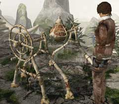
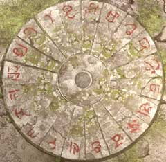
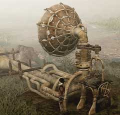
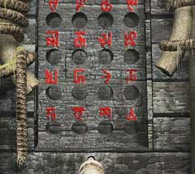

|

ユーキーを起こして扉を開いたあなたは、奥でこの装置を見つけるだろう。この見るからに奇妙な装置は何に使うのだろうか?

まず、装置の下を見て欲しい。一部が欠けた模様が刻まれているはずだ。この模様が不完全な状態では、装置のハンドルをいくら回しても砂が流れ出るだけである。 そこで、シベリアに点在する石版5枚を上の画像のようにはめてみよう。画像では小さくて見づらいかもしれない。その場合は、先ほど入手した「ユコール族のメダル」に刻まれた内側の記号を参考にして欲しい。

先ほどの奇妙な装置から「象牙の鍵」を入手したら、ハンスの言うようにマンモスを呼ばなくてはいけない。 呼ぶにはこの巨大なスピーカーを使う。

このスピーカーの下に着いている箱には、一つだけ鍵穴がある。この鍵穴に「象牙の鍵」を差し込むとフタが開く。見ての通り、いくつもの穴とそれぞれに対応した記号が記されている。 |